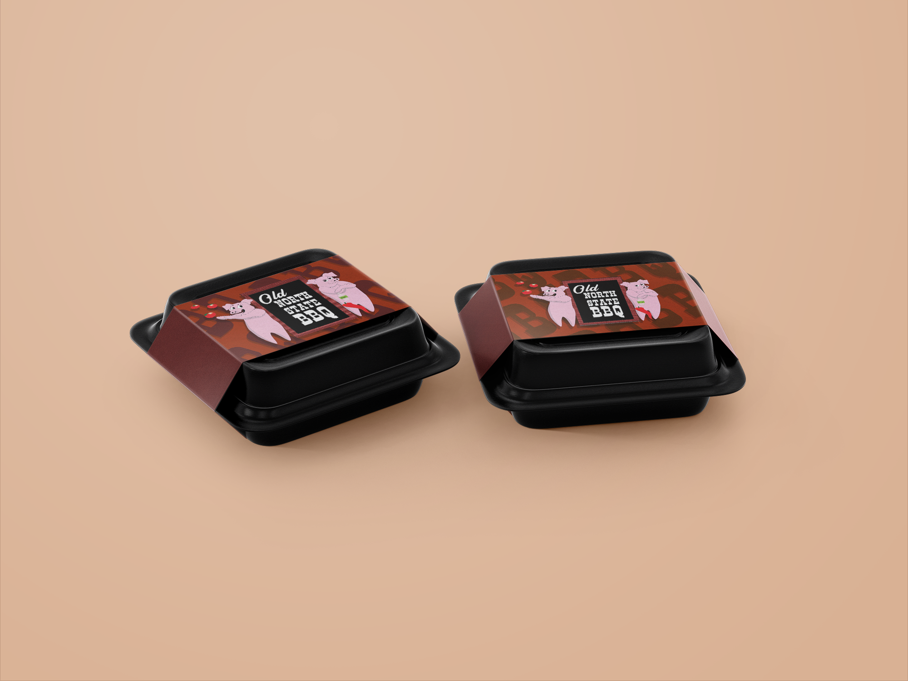
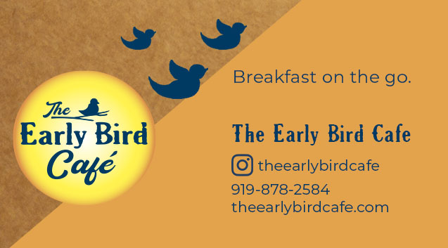
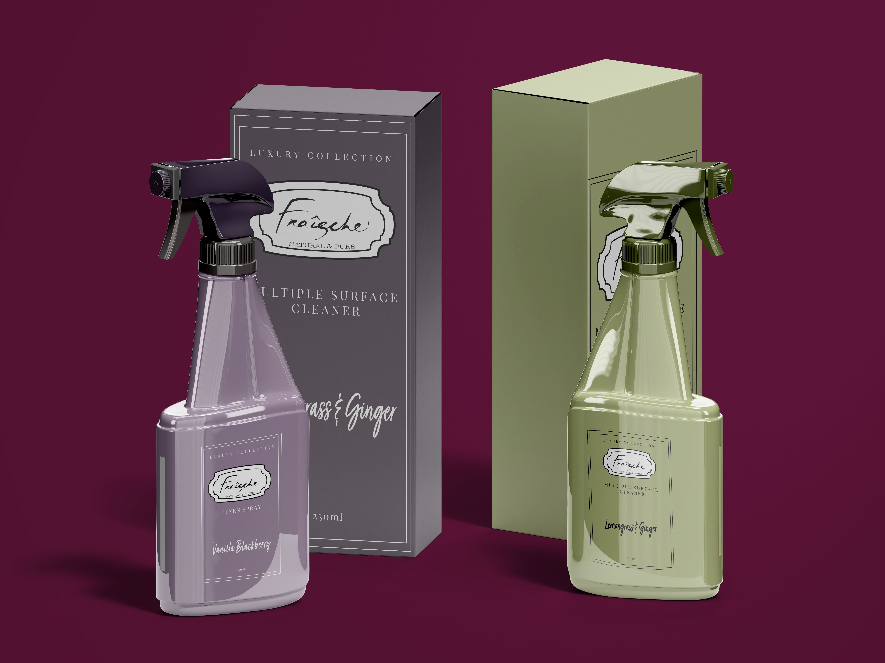
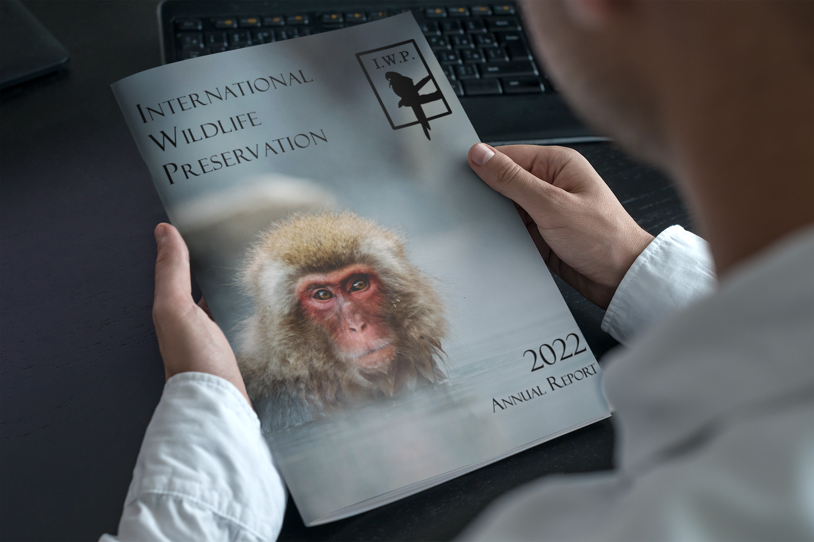

Kimberly Miller
Graphic Design Portfolio
- Logos
- Branding
- Graphics
- Promotional Ads
Featured Projects
View selected projects at kimmillerdigitaldesigns.wordpress.com.






Work Experience
Freelance Graphic Designer
2022
Work with clients to create graphic design needs.
Discuss and communicate a plan with client to establish expectations.
Create preliminary work to discuss with client at second meeting.
Finalize a direction and create final deliverables.
Portfolio
Wake Technical Community College - Raleigh, NC
AAS Advertising and Graphic Design, 2023